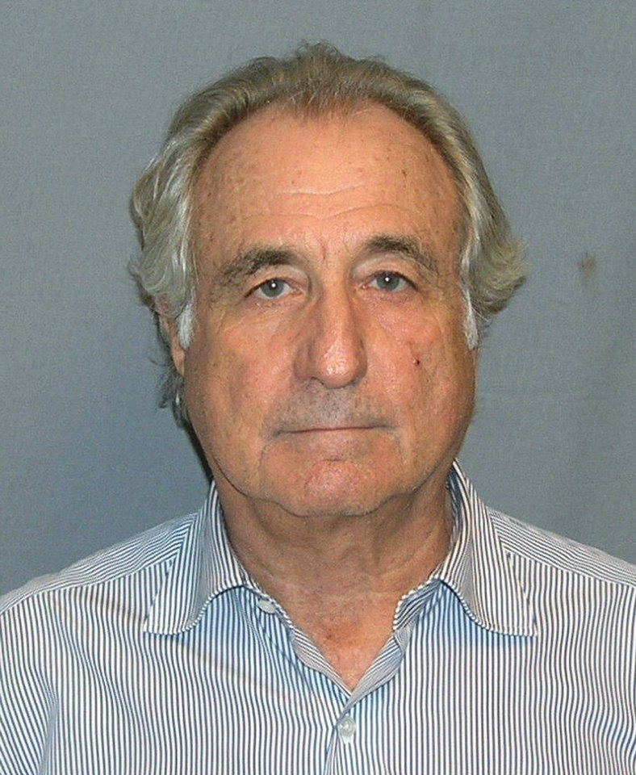

FILE FCP-16 HISTORICAL CASE FILE
Bernard Madoff’s Ponzi scheme and missed warnings
ASSESSMENT: Fraud and oversight failure are conclusively established; an official protection conspiracy is not.
Documented findings, economic interpretation and unresolved claims are assessed separately.

Claim under review
The question is whether Madoff reported fictitious investments and evaded detection despite repeated warnings to regulators.
The scheme depended on fictitious trade confirmations and custody statements rather than an actual large-scale split-strike portfolio. Redemption requests exposed the cash shortfall; no market event was needed to explain why the reported positions could not be independently verified.
Context and timeline
Madoff claimed unusually steady returns from a split-strike strategy. Harry Markopolos sent SEC warnings beginning in 1999; the firm collapsed amid redemptions in December 2008. Madoff pleaded guilty in 2009.
The SEC Inspector General reconstructed a sequence of complaints and examinations and found missed opportunities, including failures to verify trading independently. The conclusion is serious regulatory incompetence; the report expressly found no evidence of corruption or deliberate protection.
Primary records and formal findings
The plea, SEC Inspector General investigation and trustee records establish a massive Ponzi scheme and repeated examination failures; the IG found no evidence staff knowingly protected Madoff.
Account statements are not evidence of executed trades when the broker and custodian are the same operation. Exchange, clearing and bank records provide the appropriate independent checks, while trustee recoveries distinguish net cash invested from fictitious account profits.
Independent economic evidence
Trustee reconstruction found reported trades largely fictitious. Return stability was implausible at the stated scale, while clearing and custody records provided independent tests.
The most probative test is external confirmation: a purported trade should appear in exchange, clearing and custody records independent of the manager making the claim. That standard distinguished fictitious statements from actual recoveries.
Counter-evidence and limitations
Warning signs do not establish every regulator knew fraud was proven. The SEC IG found incompetence and missed opportunities but no corruption or political protection; investor diligence varied.
Falsifiable checks and assessment
Match reported trades to independent exchange and clearing records, compare claimed returns with market capacity, and identify any independently verifiable executions.
Assessment: Fraud and oversight failure are conclusively established; an official protection conspiracy is not.
Sources and evidentiary notes
- SEC Office of Inspector General, Investigation of the SEC’s Failure to Uncover Madoff (2009)Details complaints and missed examinations; found no corrupt protection. Its findings are limited to the parties, conduct, dates or mandate covered by that record.
- U.S. v. Bernard L. Madoff, plea and sentencing record (2009)Court record establishes admissions and crimes. Its findings are limited to the parties, conduct, dates or mandate covered by that record.
- SIPA Trustee Irving Picard, liquidation reportsCourt-supervised tracing distinguishes fictitious claims and actual recoveries. It addresses this episode but cannot alone resolve the broader causal question.
Historical research only; not investment or legal advice.